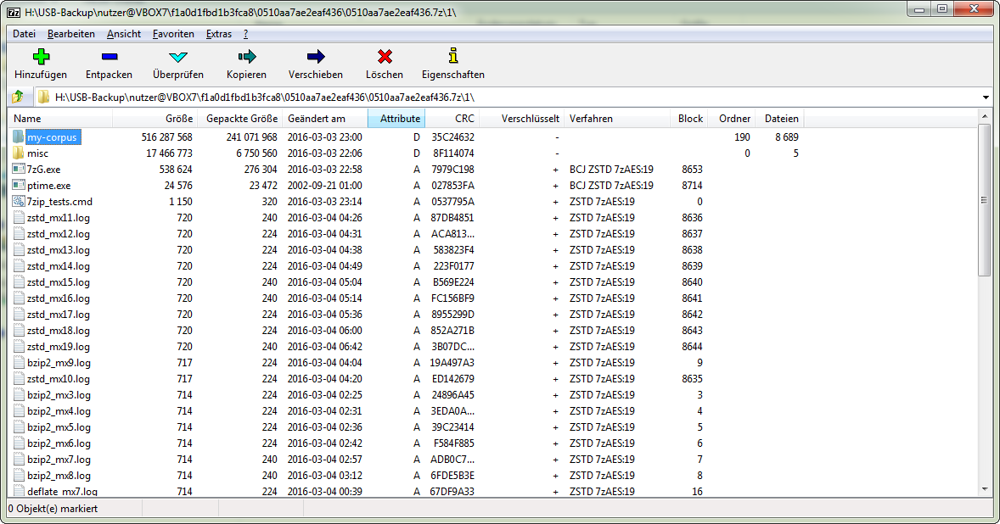
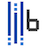
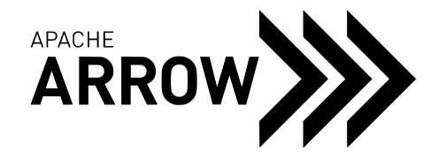
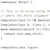

<a name="intro-video"></a>
## Watch Introductory Video
<div>
<iframe width="560" height="315" src="https://www.youtube.com/embed/k5XsiuxHv_A"
title="Explain Like I'm 5: ZSTD" frameBorder="0"
allow="accelerometer; autoplay; clipboard-write; encrypted-media; gyroscope; picture-in-picture"
allowFullScreen ></iframe>
</div>
<a name="benchmarks"></a>
Benchmarks
----------
For reference, several fast compression algorithms were tested and compared
on a server running Arch Linux (`Linux version 5.5.11-arch1-1`),
with a Core i9-9900K CPU @ 5.0GHz,
using [lzbench], an open-source in-memory benchmark by @inikep
compiled with [gcc] 9.3.0,
on the [Silesia compression corpus].
[lzbench]: https://github.com/inikep/lzbench
[Silesia compression corpus]: http://sun.aei.polsl.pl/~sdeor/index.php?page=silesia
[gcc]: https://gcc.gnu.org/
| Compressor name | Ratio | Compression| Decompress.|
| --------------- | ------| -----------| ---------- |
| **zstd 1.4.5 -1** | 2.884 | 500 MB/s | 1660 MB/s |
| [zlib] 1.2.11 -1 | 2.743 | 90 MB/s | 400 MB/s |
| brotli 1.0.7 -0 | 2.703 | 400 MB/s | 450 MB/s |
| **zstd 1.4.5 --fast=1** | 2.434 | 570 MB/s | 2200 MB/s |
| **zstd 1.4.5 --fast=3** | 2.312 | 640 MB/s | 2300 MB/s |
| quicklz 1.5.0 -1 | 2.238 | 560 MB/s | 710 MB/s |
| **zstd 1.4.5 --fast=5** | 2.178 | 700 MB/s | 2420 MB/s |
| lzo1x 2.10 -1 | 2.106 | 690 MB/s | 820 MB/s |
| [lz4] 1.9.2 | 2.101 | 740 MB/s | 4530 MB/s |
| lzf 3.6 -1 | 2.077 | 410 MB/s | 860 MB/s |
| snappy 1.1.8 | 2.073 | 560 MB/s | 1790 MB/s |
[zlib]:http://www.zlib.net/
[lz4]: http://www.lz4.org/
The negative compression levels, specified with `--fast=#`,
offer faster compression and decompression speed in exchange for some loss in
compression ratio compared to level 1, as seen in the table above.
Zstd can trade compression speed for stronger compression ratios.
It is configurable by small increment.
Decompression speed is preserved and remain roughly the same at all settings,
a property shared by most LZ compression algorithms, such as [zlib] or lzma.
The following tests were run
on a server running Linux Debian (`Linux version 4.14.0-3-amd64`)
with a Core i7-6700K CPU @ 4.0GHz,
using [lzbench], an open-source in-memory benchmark by @inikep
compiled with [gcc] 7.3.0,
on the [Silesia compression corpus].
| Compression Speed vs Ratio | Decompression Speed |
| ---------------------------|-------------------- |
| <img src="https://raw.githubusercontent.com/facebook/zstd/v1.3.4/doc/images/CSpeed2.png" alt="Compression Speed vs Ratio" style="height:500px;"> | <img src="https://raw.githubusercontent.com/facebook/zstd/v1.3.4/doc/images/DSpeed3.png" alt="Decompression Speed" style="height:500px;">
Several algorithms can produce higher compression ratio but at slower speed, falling outside of the graph.
For a larger picture including very slow modes, [click on this link](https://raw.githubusercontent.com/facebook/zstd/master/doc/images/DCspeed5.png) .
<a name="small-data"></a>
### The case for Small Data compression
Previous charts provide results applicable to typical file and stream scenarios (several MB). Small data comes with different perspectives.
The smaller the amount of data to compress, the more difficult it is to compress. This problem is common to all compression algorithms, and reason is, compression algorithms learn from past data how to compress future data. But at the beginning of a new data set, there is no "past" to build upon.
To solve this situation, Zstd offers a __training mode__, which can be used to tune the algorithm for a selected type of data.
Training Zstandard is achieved by provide it with a few samples (one file per sample). The result of this training is stored in a file called "dictionary", which must be loaded before compression and decompression.
Using this dictionary, the compression ratio achievable on small data improves dramatically.
The following example uses the `github-users` [sample set](https://github.com/facebook/zstd/releases/tag/v1.1.3), created from [github public API](https://developer.github.com/v3/users/#get-all-users).
It consists of roughly 10K records weighting about 1KB each.
Compression Ratio | Compression Speed | Decompression Speed
------------------|-------------------|--------------------
 |  | 
These compression gains are achieved while simultaneously providing _faster_ compression and decompression speeds.
Training works if there is some correlation in a family of small data samples. The more data-specific a dictionary is, the more efficient it is (there is no _universal dictionary_).
Hence, deploying one dictionary per type of data will provide the greatest benefits.
Dictionary gains are mostly effective in the first few KB. Then, the compression algorithm will gradually use previously decoded content to better compress the rest of the file.
### A rich API set :
Zstandard API is designed with learning curve in mind.
At the top, you'll find simple methods, using trivial arguments and behavior.
Then, at each new paragraph, the API introduces new concepts and parameters,
giving gradually more control for advanced usages.
You can learn more about Zstandard API by reading [its documentation](https://raw.githack.com/facebook/zstd/release/doc/zstd_manual.html).
<br/>
<a name="other-languages"></a>
## Multiple programming languages
Should you need Zstandard in different language than [reference C],
here is a list of known bindings and ports provided by great authors.
All versions support the Zstandard [format specification]
and are therefore interoperable.
Many versions listed below are bindings to the [reference C] library.
There are also full re-implementation of the algorithm in the target language
which are explicitly labelled as Ports.
| Language | Author | URL |
| ------------- | ------------------- | ------------------------------------- |
| __Java__ | Luben Karavelov | https://github.com/luben/zstd-jni |
| __Java__ (Port) | Martin Traverso | https://github.com/airlift/aircompressor/tree/master/src/main/java/io/airlift/compress/zstd
| __Python__ (full) | Gregory Szorc | https://pypi.python.org/pypi/zstandard
| __Python__ (simple) | Sergey Dryabzhinsky | https://github.com/sergey-dryabzhinsky/python-zstd
| __Python__ (bz2 api) | Ma Lin | https://pypi.org/project/pyzstd |
| __Rust__ | Alexandre Bury | https://crates.io/crates/zstd |
| __Rust__ (decoder, Port) | Moritz Borcherding | https://github.com/KillingSpark/zstd-rs
| __C#__ | SKB Kontur | https://github.com/skbkontur/ZstdNet |
| __C#__ (streaming) | Bernhard Pichler | https://github.com/bp74/Zstandard.Net
| __C#__ (signed) | Tyler Young | https://github.com/ImpromptuNinjas/ZStd
| __C#__ (Port) | Oleg Stepanischev | https://github.com/oleg-st/ZstdSharp
| __Javascript__ (emscripten) | Yoshihito | https://www.npmjs.com/package/zstd-codec
| __Javascript__ (decoder, Port) | Arjun Barrett | https://www.npmjs.com/package/fzstd
| __Javascript__ (decoder, wasm) | Don McCurdy | https://www.npmjs.com/package/zstddec
| __Javascript__ (wasm, asm) | Zs. Szende, Cs. Tamas, G. Szabo, L. Zana | https://www.npmjs.com/package/@oneidentity/zstd-js
| __Node.js__ | Tyler Stiene | https://www.npmjs.com/package/simple-zstd
| __PHP__ | Kamijo | https://github.com/kjdev/php-ext-zstd |
| __PHP__ | John Wedgbury | https://github.com/appoly/zstd-php |
| __R__ | Konstantin Sorokin | https://cran.r-project.org/web/packages/zstdr/index.html
| __Go__ (Port) | Klaus Post | https://github.com/klauspost/compress/tree/master/zstd#zstd
| __Go__ | Vianney Tran | https://github.com/DataDog/zstd |
| __Go__ (+dict) | Aliaksandr Valialkin | https://github.com/valyala/gozstd |
| __Swift__ | Anatoli Peredera | https://github.com/omniprog/SwiftZSTD |
| __Ruby__ | SpringMT | https://github.com/SpringMT/zstd-ruby |
| __Ruby__ (FFI) | Michael Sievers | https://github.com/msievers/zstandard-ruby
| __Ruby__ (stream) | Andrew Aladjev | https://rubygems.org/gems/ruby-zstds |
| __Perl__ | Jiro Nishiguchi | https://metacpan.org/release/Compress-Zstd
| __Pascal__ | Denis Anisimov | https://github.com/DenisAnisimov/ZSTD.pas
| __Visual Basic 6__ | Tanner Helland | https://github.com/tannerhelland/VB6-Compression
| __Objective C__ | Micha Mazaheri | https://github.com/luckymarmot/ZstdKit
| __Lisp__ | Guillaume Le Vaillant | https://github.com/glv2/cl-zstd |
| __Ada__ | John Marino | https://github.com/jrmarino/zstd-ada |
| __Dart__ | Instantiations | https://pub.dev/documentation/es_compression/latest/zstd/zstd-library.html
| __Scala__ (Port, decoder) | Johannes Rudolph | https://github.com/jrudolph/decoders/blob/main/src/main/scala/net/virtualvoid/codecs/zstd/Zstd.scala
| __Julia__ | Kenta Sato | https://github.com/bicycle1885/CodecZstd.jl
| __D__ | Masahiro Nakagawa | https://code.dlang.org/packages/zstd |
| __Lua__ | Soojin Nam | https://github.com/sjnam/lua-resty-zstd
| __Haskell__ | Bryan O'Sullivan | https://github.com/facebookexperimental/hs-zstd
| __Erlang__ | Yuki Ito | https://hex.pm/packages/zstd |
| __Tcl__ | D. Bohdan | https://wiki.tcl-lang.org/48788 |
| __SmallTalk__ | Instantiations | http://www.instantiations.com/resources/goodies.html#instantiations
| __Elixir__ | chenzhuoyu | https://hex.pm/packages/ex_zstd |
| __OCaml__ | Jane Street | https://opam.ocaml.org/packages/zstandard/
| __Crystal__ | @didactic-drunk | https://github.com/didactic-drunk/zstd.cr
| __Nim__ | wltsmrz | https://github.com/wltsmrz/nim_zstd |
| __Racket__ | Vincent Lee | https://pkgs.racket-lang.org/package/zstd |
[reference C]:https://github.com/facebook/zstd
[format specification]:https://github.com/facebook/zstd/blob/master/doc/zstd_compression_format.md
<br/>
<a name="GUI"></a>
## Graphical User Interfaces
Tino Reichardt has created a version of [7-zip archive manager with Zstandard](https://mcmilk.de/projects/7-Zip-ZStd/).
Denis Anisimov, of TC4shell fame, also developed a [7-zip plugin with Zstandard support](http://www.tc4shell.com/en/7zip/modern7z/).
Peazip is a free multi-platforms archiver by Giorgio Tani with [support for Zstandard](https://peazip.github.io/zst-compressed-file-format.html)
[WinRAR](https://www.rarlab.com/download.htm) supports decoding of Zstandard files (as well as zip files using Zstandard encoder)

<br/>
<a name="references"></a>
## Zstandard is used by :
#### Featured
<div class="container">
<ul class="list-inline">
<li><a href="https://www.kernel.org/" ></a> [Linux](https://www.phoronix.com/scan.php?page=article&item=linux-414-features) </li>
<li><a href="https://www.freebsd.org/" ></a> [FreeBSD](https://svnweb.freebsd.org/changeset/base/329240)</li>
<li><a href="https://aws.amazon.com/redshift/" ></a> [Redshift](https://aws.amazon.com/about-aws/whats-new/2017/01/amazon-redshift-now-supports-the-zstandard-high-data-compression-encoding-and-two-new-aggregate-functions/) </li>
<li><a href="https://www.github.com/" ></a> [Github Actions](https://github.com/actions/cache/pull/270)</li>
<li><a href="https://www.mercurial-scm.org/" ></a> [Mercurial](https://www.mercurial-scm.org/wiki/Release4.1)</li>
</ul>
</div>
#### Databases
<div class="container">
<ul class="list-inline">
<li><a href="https://rocksdb.org/" ></a> [RocksDB](https://twitter.com/rocksdb/status/771387757306388480) </li>
<li><a href="https://hadoop.apache.org/" ></a> [Hadoop](https://issues.apache.org/jira/browse/HADOOP-13578) </li>
<li><a href="https://www.mysql.com/" ></a> [MySQL](https://dev.mysql.com/doc/relnotes/mysql/8.0/en/news-8-0-18.html#mysqld-8-0-18-connection-control) </li>
<li><a href="https://cassandra.apache.org/" ></a> [Cassandra](https://issues.apache.org/jira/browse/CASSANDRA-14482) </li>
<li><a href="https://www.mongodb.com/" ></a> [MongoDB](http://mongodb.github.io/mongo-java-driver/3.12/driver-async/tutorials/compression/) </li>
<li><a href="http://www.wiredtiger.com/" ></a> [WiredTiger](https://github.com/wiredtiger/wiredtiger/tree/master/ext/compressors/zstd) </li>
<li><a href="https://redis.io/" ></a> [Redis](https://github.com/chadnickbok/redis-zstd-module) </li>
<li><a href="http://prestodb.github.io/" ></a> [Presto](https://prestosql.io/docs/current/release/release-314.html) </li>
<li><a href="https://clickhouse.tech/" ></a> [ClickHouse](https://clickhouse.tech/docs/en/operations/server-configuration-parameters/settings/#server-settings-compression) </li>
<li><a href="https://groonga.org/" ></a> [Groonga](http://groonga.org/en/blog/2016/11/29/groonga-6.1.1.html) </li>
<li><a href="https://tarantool.org/" ></a> [Tarantool](https://github.com/tarantool/tarantool/blob/master/cmake/BuildZSTD.cmake) </li>
<li><a href="https://github.com/XeLabs/tokudb" ></a> [TokuDB](https://github.com/XeLabs/tokudb/commit/7ba55b2ee6aaac0980daa0a6b269a5c551da4ba6) </li>
<li><a href="https://hbase.apache.org/" ></a> [HBase](https://issues.apache.org/jira/browse/HBASE-16710) </li>
<li><a href="https://www.postgresql.org/" ></a> [PostgreSQL](https://github.com/grahamedgecombe/pgzstd) </li>
<li><a href="https://github.com/VictoriaMetrics/VictoriaMetrics/"><img src="images/victoriametrics.png"/></a> [VictoriaMetrics](https://medium.com/faun/victoriametrics-achieving-better-compression-for-time-series-data-than-gorilla-317bc1f95932) </li>
<li><a href="https://www.scylladb.com/" ></a> [Scylla](https://www.scylladb.com/2019/10/04/compression-in-scylla-part-one/) </li>
<li><a href="https://www.vertica.com/" ></a> [Vertica](https://www.vertica.com/docs/9.3.x/HTML/Content/Authoring/SQLReferenceManual/Statements/encoding-type.htm?zoom_highlight=zstandard#Zstandar) </li>
<li><a href="https://impala.apache.org/" ></a> [Impala](https://impala.apache.org/docs/build/html/topics/impala_new_features.html) </li>
<li><a href="https://trino.io/" ></a> [Trino](https://trino.io/docs/current/search.html?q=zstd) </li>
<li><a href="https://www.starrocks.io/" ></a> [StarRocks](https://docs.starrocks.io/en-us/latest/sql-reference/sql-statements/data-definition/CREATE%20TABLE#set-data-compression-algorithm) </li>
</ul>
</div>
#### File systems & storage
<div class="container">
<ul class="list-inline">
<li><a href="https://btrfs.wiki.kernel.org/index.php/Main_Page"></a> [BtrFS](https://btrfs.wiki.kernel.org/index.php/Compression) </li>
<li><a href="http://open-zfs.org/wiki/Main_Page"></a> [OpenZFS](https://github.com/openzfs/zfs/commit/10b3c7f5e424f54b3ba82dbf1600d866e64ec0a0) </li>
<li><a href="https://en.wikipedia.org/wiki/SquashFS"></a> [SquashFS](https://www.phoronix.com/scan.php?page=news_item&px=Linux-4.14-Zstd-Pull) </li>
<li><a href="https://www.ntfs.com/refs-basics.htm"></a> [ReFS](https://gist.github.com/0xbadfca11/da0598e47dd643d933dc#refs-39) </li>
<li><a href="https://f2fs.wiki.kernel.org/start"></a> [F2FS](https://www.phoronix.com/scan.php?page=news_item&px=F2FS-Zstd-Linux-5.7-Pull) </li>
<li><a href="https://en.wikipedia.org/wiki/ReiserFS"></a> [ReiserFS](https://metztli.it/blog/index.php/building-new-reiser4-software-format?blog=4) </li>
<li><a href="https://www.truenas.com//" ></a> [TrueNAS](https://github.com/freenas/freenas/pull/5517)</li>
</ul>
</div>
#### Web
<div class="container">
<ul class="list-inline">
<li><a href="https://caddyserver.com/" ></a> [caddy](https://twitter.com/mholt6/status/1137176475784732673) </li>
<li><a href="https://github.com/facebook/hhvm" ></a> [HHVM](https://github.com/facebook/hhvm/commit/d830ac5b335cea8433abcda14a044d71da3bd0dc) </li>
<li><a href="https://github.com/tokers/zstd-nginx-module"></a> [nginx (module)](https://github.com/tokers/zstd-nginx-module) </li>
<li><a href="https://curl.haxx.se/" ></a> [curl](https://github.com/curl/curl/pull/5453) </li>
<li><a href="https://gitlab.com/gnuwget/wget2" ></a> [wget2](https://twitter.com/ruehsen/status/1050701663995129862) </li>
<li><a href="https://www.djangoproject.com/" ></a> [django](https://pypi.org/project/django-compression-middleware/) </li>
<li><a href="https://httptoolkit.tech/" ></a> [HTTP Toolkit](https://twitter.com/HttpToolkit/status/1396911225108418564) </li>
</ul>
</div>
#### Archives
<div class="container">
<ul class="list-inline">
<li><a href="https://www.winzip.com/" ><img src="images/winzip.png" /></a> [winzip](http://kb.winzip.com/kb/entry/313/) </li>
<li><a href="https://www.winrar.com/" ></a> [winrar](https://www.rarlab.com/rarnew.htm) </li>
<li><a href="http://www.powerarchiver.com/" ></a> [PowerAchiver](https://www.powerarchiver.com/2020/04/08/powerarchiver-2021-preview-build-32-is-out-today/) </li>
<li><a href="https://fogproject.org/" ></a> [Fog](https://news.fogproject.org/fog-1-3-5-rc-9/) </li>
<li><a href="https://borgbackup.readthedocs.io/en/stable/"></a> [Backup](https://github.com/borgbackup/borg/issues/1633#issuecomment-307556500) </li>
<li><a href="http://www.libarchive.org/" ></a> [libarchive](https://github.com/libarchive/libarchive/pull/905) </li>
<li><a href="https://www.gnu.org/software/tar/"></a> [tar](https://www.phoronix.com/scan.php?page=news_item&px=Tar-Zstd-Compression) </li>
<li><a href="https://www.smartversion.com/smartversion.htm"></a> [SmartVersion](http://smartversion.com/download.htm) </li>
</ul>
</div>
#### Serialization
<div class="container">
<ul class="list-inline">
<li><a href="http://www.fstpackage.org/" ></a> [FST](https://github.com/fstpackage/fst/tree/master/src/ZSTD) </li>
<li><a href="http://www.blosc.org/" ></a> [Blosc](https://www.blosc.org/posts/zstd-has-just-landed-in-blosc/) </li>
<li><a href="http://bcolz.blosc.org/en/latest/"></a> [bcolz](https://github.com/Blosc/bcolz/tree/master/c-blosc/internal-complibs/zstd-1.1.2) </li>
<li><a href="https://arrow.apache.org/" ></a> [Apache Arrow](https://arrow.apache.org/blog/2020/04/21/0.17.0-release/) </li>
<li><a href="https://pypi.python.org/pypi/mrcz"></a> [mrcz](https://github.com/em-MRCZ/c-mrcz) </li>
<li><a href="http://www.well.ox.ac.uk/~gav/bgen_format/bgen_format.html"></a> [bgen](http://www.well.ox.ac.uk/~gav/bgen_format/bgen_format.html) </li>
<li><a href="https://developer.mozilla.org/en-US/docs/Mozilla/Gecko"></a> [Gecko](https://bug635044.bugzilla.mozilla.org/show_bug.cgi?id=1316183) </li>
<li><a href="https://support.hdfgroup.org/HDF5"></a> [HDF5](https://github.com/aparamon/HDF5Plugin-Zstandard) </li>
<li><a href="https://github.com/Sereal/Sereal" ></a> [Sereal](https://github.com/Sereal/Sereal/tree/master/Perl/shared/zstd) </li>
<li><a href="https://www.cog-genomics.org/plink/2.0/"></a> [PLink2](https://www.cog-genomics.org/plink/2.0/) </li>
<li><a href="http://kirill-kryukov.com/study/naf/"></a> [NAF](http://kirill-kryukov.com/study/naf/) </li>
</ul>
</div>
#### Network
<div class="container">
<ul class="list-inline">
<li><a href="https://code.facebook.com/projects/1410559149202582/fbthrift/"></a> [fbthrift](https://github.com/facebook/fbthrift/commit/ec42813f0ced737617d4614900ef3a96c1f3d17f) </li>
<li><a href="https://github.com/facebookincubator/fizz"></a> [Fizz](https://github.com/facebookincubator/fizz/blob/master/fizz/protocol/ZstdCertificateCompressor.h) </li>
<li><a href="https://code.facebook.com/projects/676603015770415/proxygen/"></a> [proxygen](https://github.com/facebook/proxygen/blob/master/proxygen/lib/utils/ZstdStreamDecompressor.h) </li>
<li><a href="https://code.facebook.com/projects/470946523057396/mcrouter/"></a> [mcrouter](https://github.com/facebook/mcrouter/blob/master/mcrouter/lib/ZstdCompressionCodec.h) </li>
<li><a href="https://rspamd.com/" ></a> [Rspamd](https://rspamd.com/announce/2016/11/21/rspamd-1.4.0.html) </li>
<li><a href="https://www.torproject.org/" ></a> [Tor](https://blog.torproject.org/blog/tor-0312-alpha-out-notes-about-0311-alpha) </li>
<li><a href="https://neomutt.org/" ></a> [NeoMutt](https://neomutt.org/feature/hccompress) </li>
<li><a href="https://download.samba.org/pub/rsync/NEWS#3.2.0"></a> [Rsync](https://download.samba.org/pub/rsync/NEWS#3.2.0) </li>
</ul>
</div>
#### Hardware
<div class="container">
<ul class="list-inline">
<li><a href="https://github.com/Xilinx/Vitis_Libraries/blob/master/data_compression/README.rst"></a> [Xilinx](https://github.com/Xilinx/Vitis_Libraries/tree/master/data_compression/L2/tests/zstd_quadcore_compress) </li>
<li><a href="https://inaccel.com/" ></a> [Inaccel](https://inaccel.com/) </li>
<li><a href="https://developer.ibm.com/storage/2018/11/26/ts7700-enhanced-compression/"></a> [IBM TS7700](https://developer.ibm.com/storage/2018/11/26/ts7700-enhanced-compression/) </li>
</ul>
</div>
#### Games & Creation
<div class="container">
<ul class="list-inline">
<li><a href="https://leagueoflegends.com/en" ><img src="images/lol.png " /></a> [League of Legends](https://technology.riotgames.com/news/supercharging-data-delivery-new-league-patcher) </li>
<li><a href="https://www.blender.org/" ></a> [Blender](https://wiki.blender.org/wiki/Reference/Release_Notes/3.0/Core) </li>
<li><a href="https://godotengine.org/" ><img src="images/godot.png" /></a> [Godot](https://github.com/godotengine/godot/tree/master/thirdparty/zstd) </li>
<li><a href="http://github.khronos.org/KTX-Specification/"></a> [Khronos's KTX](http://github.khronos.org/KTX-Specification/) </li>
<li><a href="https://github.com/Siv3D/OpenSiv3D"></a> [OpenSiv3D](https://github.com/Siv3D/OpenSiv3D/tree/master/Siv3D/Source/ThirdParty/zstd) </li>
<li><a href="http://www.esenthel.com/" ></a> [Esenthel](http://www.esenthel.com/?id=feature_list) </li>
<li><a href="http://masseffect.bioware.com/" ></a> [Mass Effect:Andromeda](https://youtu.be/u3zSdu2mp9A?t=6m33s) </li>
</ul>
</div>
#### Misc
<div class="container">
<ul class="list-inline">
<li><a href="https://www.ubuntu.com/" ></a> [Ubuntu](https://www.omgubuntu.co.uk/2018/03/faster-ubuntu-installs-zstd-compression) </li>
<li><a href="https://getfedora.org/" ></a> [Fedora](https://fedoraproject.org/wiki/Changes/Switch_RPMs_to_zstd_compression) </li>
<li><a href="https://www.archlinux.org/" ></a> [ArchLinux](https://www.archlinux.org/news/now-using-zstandard-instead-of-xz-for-package-compression/) </li>
<li><a href="https://rpm.org/" ></a> [RPM](https://rpm.org/wiki/Releases/4.14.0) </li>
<li><a href="https://wiki.freebsd.org/pkgng" ></a> [PKG](https://svnweb.freebsd.org/ports?view=revision&revision=512256) </li>
<li><a href="https://conda.io/" ></a> [Conda](https://www.anaconda.com/how-we-made-conda-faster-4-7/) </li>
<li><a href="https://gcc.gnu.org/" ></a> [GCC](https://www.phoronix.com/scan.php?page=news_item&px=GCC-10-Gets-Zstd-LTO-Byte-Comp) </li>
<li><a href="https://code.facebook.com/projects/527543867323997/folly/"></a> [folly](https://github.com/facebook/folly/blob/master/folly/compression/Compression.h#L83) </li>
<li><a href="https://cmake.org/" ></a> [cmake](https://cmake.org/cmake/help/v3.15/release/3.15.html) </li>
<li><a href="https://docs.taskcluster.net/" ></a> [TaskCluster](https://github.com/taskcluster/taskcluster-worker/pull/114)</li>
<li><a href="http://www.ultimatepp.org/" ></a> [U++](http://www.ultimatepp.org/www$uppweb$Roadmap$en-us.html) </li>
<li><a href="http://ceph.com/" ></a> [Ceph](https://github.com/ceph/ceph/tree/master/src/compressor/zstd)</li>
<li><a href="https://github.com/MarekKowalski/LiveScan3D"></a> [LiveScan3D](https://github.com/MarekKowalski/LiveScan3D/pull/14) </li>
<li><a href="https://kiwix.org/" ></a> [Kiwix](https://www.kiwix.org/en/zim-tools-3-0-0-is-out/) </li>
</ul>
</div>
<br/>
---
<div className="footerSection">
<h7>Legal</h7>
<a
href="https://opensource.facebook.com/legal/privacy/"
target="_blank"
rel="noreferrer noopener">
Privacy
</a>
<a
href="https://opensource.facebook.com/legal/terms/"
target="_blank"
rel="noreferrer noopener">
Terms
</a>
Copyright © Meta Platforms, Inc.
</div>